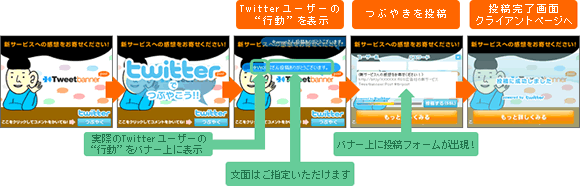
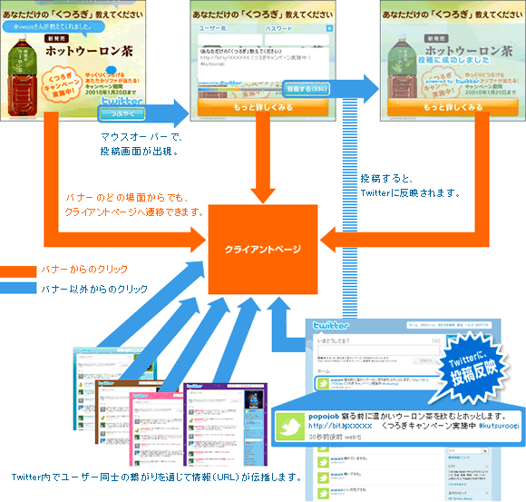

RSS広告社とCGMマーケティング、バナー上からTwitterのツイートを投稿できる「Tweetbanner Post」を開発
株式会社RSS広告社(本社：東京都渋谷区、代表取締役：田中 弦、以下 RSS広告社)は、株式会社CGMマーケティング(本社：東京都渋谷区、代表取締役社長：林 郁、以下：CGMM)と共同で開発したTwitterの持つ情報伝播機能を利用できるバナー広告「Tweetbanner」の新バージョンとして、 「Tweetbanner Post」を開発しました。
「Tweetbanner Post」は、TwitterユーザーがTwitter本サイトを訪れることなく、バナー上から商品やサービスに対するコメントを簡単に投稿できる機能を搭載しています。 これにより、広告主はこれまでのバナー広告にTwittterへの投稿をうながす機能を加えることが可能となり、Twitterを活用してより有効にマーケティング活動に活かすことができるようになります。
また、Twitterの公式アカウントを取得していない広告主も利用可能となるため、Twitterを利用したマーケティングを手軽に行うことが可能です。
【Tweetbanner Postの特徴】
●Twitterと連携したマーケティングが容易に
バナー上に掲載されているキャンペーン等の企業サービスに対して、Twitter本サイトを訪れることなく、バナー上から直接Twitterにコメントを 投稿できます。その際、ユーザーはTwitterアカウントのID・パスワード、およびコメントを入力し投稿ボタンを押すだけなので、操作は非常に簡単です。バナー上から投稿されたコメントは、Twitter本サイトに反映されます。
●Twitterの情報伝播力を活用できる
バナー上から投稿されたTwitterのつぶやきは、Twitter内でユーザー同士の繋がりを通じて伝播されることが期待できます。また、つぶやきにURLを混ぜて発信することにより、バナー以外からの誘導も獲得できます。
●「バナー経由での投稿」に一体感が生まれる
ユーザーのアクション(コメント投稿)を可視化し、バナー上にどのユーザーが同じバナー経由でTwitterにコメント投稿したかを表示します。これにより、一体感・リアルタイム感が演出されます。
広告主は、このようなTwitterユーザーとのコミュニケーションを通じて、サービスや商品に対しての声を収集することができます。
【Tweetbanner Post概要】

【Tweetbanner Postからの情報伝播イメージ】

詳細・デモは下記URLよりご覧いただけます。
http://www.rssad.jp/service/tweetbanner_post.html
対応メディア第1弾として、株式会社クライテリア・コミュニケーションズ(本社：東京都港区、代表取締役CEO：広屋 修一)の運営するアドネットワーク「ADJUST」で1月より販売を開始いたします。
また、本サービスのオプションとして、CGMMが提供するTwitterのつぶやきを集約したASPサービスを利用することも可能です。
【Twitterについて】
Twitterは、“What’s Happening？”(いまどうしてる？)“What are you doing？”(いまなにしている？)というシンプルな問いかけに140文字以内で答えることによって、さまざまなユーザー同士がつながるコミュニケー ション・ツールです。
投稿したメッセージは、自分を「フォロー」しているユーザーにリアルタイムで届きます。日常的な何気ないやりとりから、企業によるプロモーションへの活用 に至るまで、Twitterの使い方はさまざまです。メッセージのやりとりには、Webサイトだけでなく、パソコンで動作する各種の専用のクライアント・ ソフトウエアや携帯電話が使えるなど、自由度の高いコミュニケーション・ツールです。
【株式会社RSS広告社について】
RSS広告社は平成17年4月、日本で初めてRSSフィードを利用した広告出稿／配信サービスを行うRSS広告専業企業として設立し、日本におけるRSS 広告市場を自ら創造し、成長させ、進化させる会社として、RSSフィードを使ったさまざまな広告商品を開発、提供しています。
社名 ： 株式会社RSS広告社
URL ： http://www.rssad.jp/
本社 ： 東京都渋谷区神南1-3-4 神南ビル７F
代表者： 代表取締役 田中 弦
【株式会社CGMマーケティングについて】
株式会社デジタルガレージ（JASDAQ：4819、本社：東京都渋谷区、代表取締役／グループCEO：林 郁）、株式会社電通、株式会社サイバー・コミュニケーションズ、株式会社アサツー ディ・ケイの4 社による共同出資会社。Twitter公式ナビゲーションサイト、「ツイナビ」 (http://twinavi.jp/)を運営。
【本リリースに関する技術／導入などのお問合せ先】
株式会社RSS広告社
担当 ： 松島・山田(ソーシャルアド事業部)
Tel ： 03-6416-1290
E-Mail： ad-tb@rssad.jp